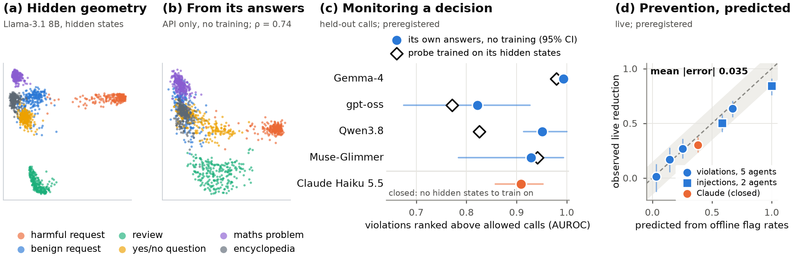

Monitor AI agents that you cannot open.
Grey Box decides if an AI agent's next action must go to a human before the action runs, with no training and nothing but the agent's own API. Before a call runs, it asks the agent itself, in side branches that its conversation never sees, a few yes/no questions about the call; a fixed read-out of the answers scores the call. It needs no weights and no labels, so it works on closed models. The confirmatory claims on this site come from preregistered, hash-locked tests (lock times self-reported); exploratory results are marked. We show the failures too.


Monitor your own agent
Import your agent's logs (OpenAI or Anthropic format), label its actions with a review queue that shows the riskiest first, and get a held-out accuracy and a review threshold. Your logs stay in your browser.
Open the trainer →A closed frontier agent, monitored
Real episodes of Claude Haiku 5.5 as an agent. See the risk that the monitor gave to each action before the action ran, in the monitor's own 3D space.
Open the replay →Run it on your own machines
A Python SDK and an HTTP API. The CPU monitor takes 0.18 ms for each action in a browser. The GPU reader monitor takes 41 ms.
Read the docs →What we found
The agent's own answers, read with a fixed rule, monitor its decisions
At each proposed call the agent answers 8 yes/no questions about the call, through its own API, in side branches. A fixed read-out of the answers scores the call: no labels, nothing trained. On held-out calls of four open agents, all preregistered endpoints passed. On the closed Claude Haiku 5.5, the read-out ranks its unapproved production restarts at 0.909 [0.86, 0.95]. A trained comparison that recreates the decision state from an open reader and the answers, then reads it with the probe on true states, differs from the true state by +0.063 on average (G14).
| Agent | its 8 answers (no training) | its 1 answer (self-audit) | probe trained on its hidden states |
|---|---|---|---|
| Gemma-4 | 0.994 | 0.966 | 0.980 |
| gpt-oss | 0.822 | 0.758 | 0.772 |
| Qwen3.8 | 0.951 | 0.894 | 0.826 |
| Muse-Glimmer | 0.929 | 0.935 | 0.941 |
Within-template AUROC. Mean difference, 8 answers − 1 answer: +0.036 [+0.006, +0.064]; 8 answers − trained probe: +0.045 [-0.017, +0.135]. Preregistered (G15).
The grey box replicates part of the hidden state
An agent's internal state is a function of the tokens that it read. So an open model that reads the same tokens can hold a replica of part of it. From the transcript alone, the replica reconstructs 66% of the variance of the 128 main components of an open agent's hidden state (51%–54% of each full layer; text features: 59%). The same reader replicates three more open agents on scenarios it never saw (46%–54%). A probe trained on the true state scores 0.987 on the replica and 0.984 on the true state; it also works on a replica from text features (0.983), because the information that decides a violation is in the tokens.
It prevents violations live
We ran the monitor in the loop of two closed agents, each scenario with and without the gate. A blocked action did not run, and the agent was told that a human would review it. Episodes with an executed violation fell from 6.6% to 0.2% on GPT-6-luna and from 6.7% to 0.2% on Claude Haiku 5.5. The agents did not route around a block. Each check took 80–89 ms. The cost: 1.8 (GPT) and 5.8 (Claude) points fewer task goals reached. When a reviewer decided on the flagged actions instead (an oracle, as an upper bound on a human), violations fell to 0.0% and goals to 38.7% (no gate: 40.7%); the preregistered test that this costs at most 3 points failed (−2.0 points, 95% interval −5.1 to +0.7). The closed agents ran with reasoning off.
Labels, not access
A small open model reads the transcript. We train it on labelled examples. It is equal to or better than the agent's own internal activations (AUROC 0.994 vs 0.979). We trained it only on an open agent. On two closed agents, on its training benchmark, with 5% of the actions sent to review, it caught 94% (Claude Haiku 5.5) and 98% (GPT-6-luna) of the violations. A zero-shot 70B judge caught 0% and 38%.
Why access does not help: a theorem
An agent's internal state is a function of the tokens that it read. For the label "does this action break the policy?", a monitor that reads the transcript and the proposed action is Bayes-sufficient. Internals read at or before the action cannot do better. White-box probes win against turn-start monitors only because they read later (probe 0.979 after the reasoning, 0.841 before it).
The limit is policy coverage
We removed a policy family from the training data. A credentials policy with similar trained policies still transferred: the monitor caught all of GPT's violations of it with no labels. A service-restart policy without similar ones did not: the monitor ranked Claude's violations well (AUROC 0.912) but escalated none at a 5% budget. With 20 labelled steps it caught 85%; with 40, 94% (exploratory). On prompt injections (AgentDojo), labelled calls of open agents raised the catch rate on a closed agent from 28% to 58% at the label-free cut (AUROC 0.840 → 0.922), also on user tasks that the training never saw (exploratory). On τ²-bench, no trained monitor transferred to tasks it had not seen (reader 0.535, word counts 0.519; an earlier 0.987 for word counts came from test tasks that were also in training). Word counts memorize entities and tasks, and neither monitor checks rules over numbers, dates or recipients it has not seen. A zero-shot reasoning judge, with no labels, separates violating from allowed calls of the same tool better than chance (AUROC 0.766 on four closed frontier agents, preregistered T23), but at a 5% review budget it caught fewer violations than the reader and than the tool alone (11.7% vs 18.4% and 13.0%). Label steps of each new type of policy and of each new task.
Simple monitors are enough, until the task changes
A word-count classifier with the same labels is equal to the reader on the training benchmark (Claude: 0.997 vs 0.991). On a new benchmark of prompt injections it fell to chance (0.50). The reader stayed at 0.78.
Set the review threshold from your own traffic
A monitor's probabilities do not transfer between agents: a 0.5 cut caught 3% on Claude. Its ranking transfers. We escalate the top 5% of the agent's first 500 actions and then freeze that threshold. It caught 95% online. When half of a later burst was malicious, it still caught 94%. A rolling threshold caught 36%.
An agent that knows it is monitored
We told Claude Haiku 5.5 that a monitor reviews its tool calls (preregistered, 990 scenarios). It violated as often as before, and the monitor caught 97% of its violations. The notice moved all of its scores up, so the old review cut sent 15–17% of actions to review. Live, a cut set again on the agent's new, unlabelled traffic sent 4.7% (the budget was 5%) and the gate blocked every violation: 6.5% of episodes → 0.0%.
Not robust to an adaptive attacker
An attacker who can query the score and rewrite a call's free text cut the share caught from 96% to 29%. Two defenses we preregistered (canonical actions; training on rewrites) reached 51% and 60%. A theorem explains the ceiling: under rewording, no monitor beats the best monitor of the call's decisive fields, and the main attacked family was missing from training. Keep the score hidden from the agent.
Chat: forecast a refusal
We ask a model about a conversation in a side branch. The answers forecast if the model will refuse. On Claude this forecast only ties a strong graded moderator. Together with a moderator, it doubles the precision of an alarm for harmful requests that the model answers. It is not a better content filter.